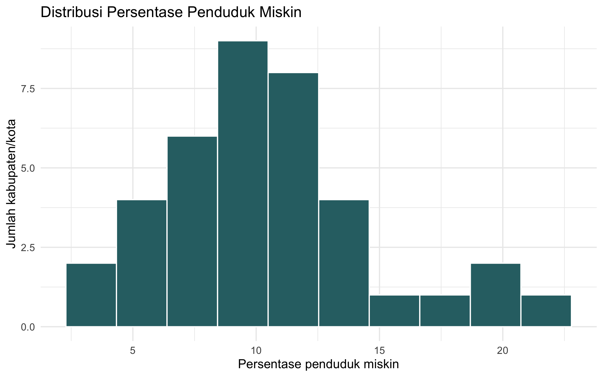
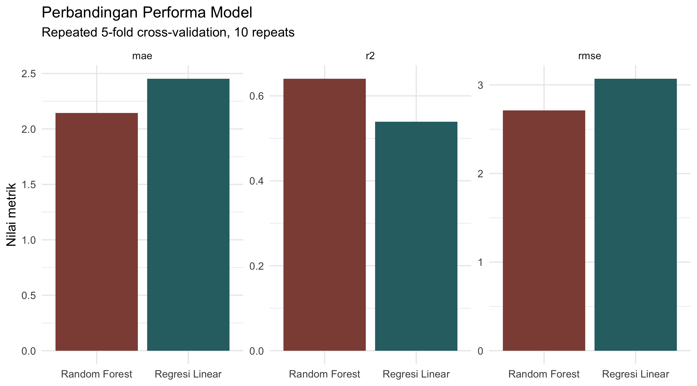
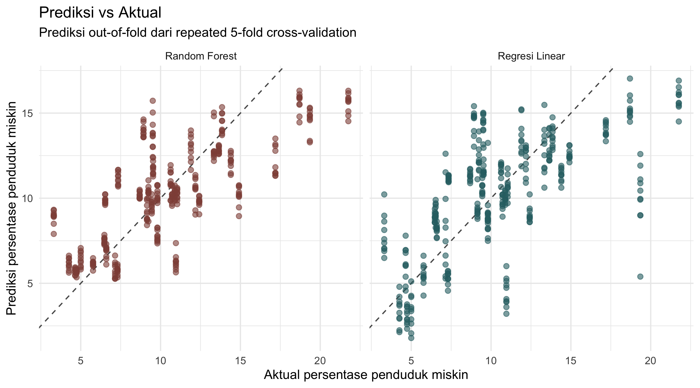
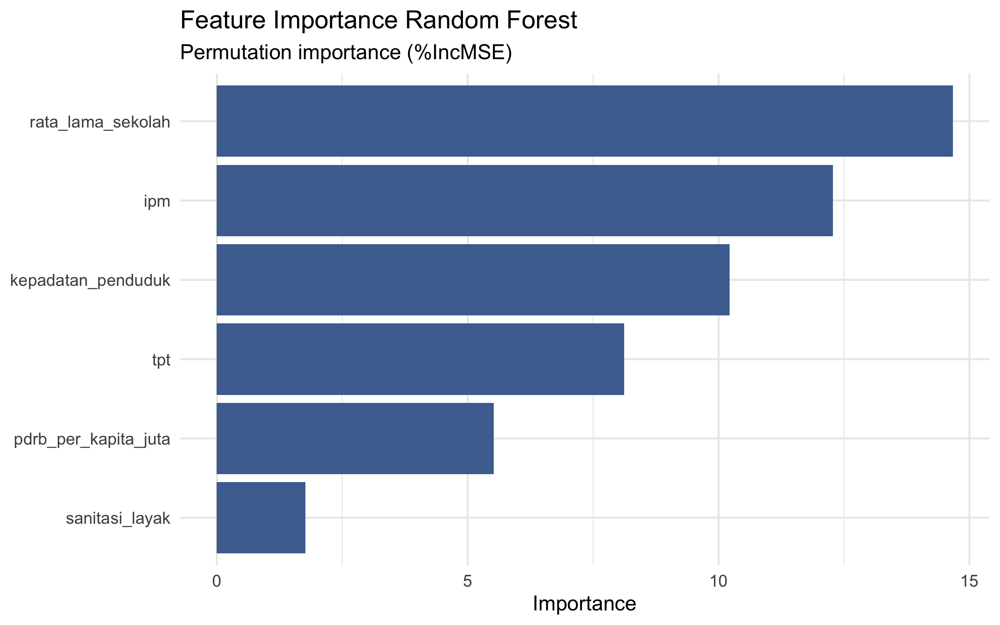

38 wilayah, enam indikator
Target model adalah persentase penduduk miskin pada Maret 2023. Satu observasi mewakili satu kabupaten atau kota. Baris agregat Jawa Timur dikeluarkan.
Tujuh tabel BPS digabung menurut nama wilayah. PDRB per kapita dikonversi dari ribu ke juta rupiah sebelum pemodelan.
Prediktor
- Indeks Pembangunan Manusia
- Pengangguran terbuka
- PDRB per kapita
- Rata-rata lama sekolah
- Sanitasi layak
- Kepadatan penduduk


Error terendah pada Random Forest
Nested cross-validation memisahkan pemilihan parameter di fold dalam dari evaluasi di fold luar. Baseline memakai rerata target data latih pada setiap fold.
| Model | RMSE ↓ | MAE ↓ | R² ↑ |
|---|---|---|---|
| Rerata data latih | 4,286 | 3,326 | −0,010 |
| Regresi Linear | 3,306 | 2,525 | 0,399 |
| Random Forest | 2,674 | 2,137 | 0,607 |
RMSE dan MAE dalam poin persentase. Lihat ringkasan evaluasi. Angka ini berasal dari pengujian internal pada data 2023.
Prediksi dan perilaku model
Dua grafik evaluasi berasal dari repeated 5-fold CV × 10. Jalur ini memakai resampling yang sama untuk pemilihan parameter Random Forest dan pelaporan metrik.






Alur pemodelan
-
Gabungkan dan validasi
Gabungkan tujuh CSV BPS. Periksa 38 baris data, nilai hilang, wilayah duplikat, dan rentang target.
-
Latih dua model
Gunakan Regresi Linear sebagai pembanding. Latih Random Forest dengan 500 pohon dan kandidat
mtry2–6. -
Uji pada fold luar
Pilih parameter pada tiga fold dalam dan uji pada lima fold luar. Repeated CV × 10 menjadi analisis awal dan sumber grafik evaluasi.
Batas pemakaian hasil
Evaluasi mencakup 38 observasi dari satu tahun. Validasi spasial dan pengujian lintas tahun masih diperlukan. Hubungan antarindikator, seperti IPM dan lama sekolah, membatasi interpretasi pengaruh masing-masing variabel.